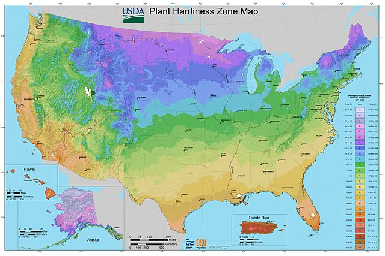

Get Weather
Geographic Coordinates:
°
°
Current Conditions:
Daily Forecast:
5 Day Forecast:
Current Weather Map
US Plant Hardiness Map

Credit: USDA-ARS and Oregon State University (OSU)
Click to view Source and related maps